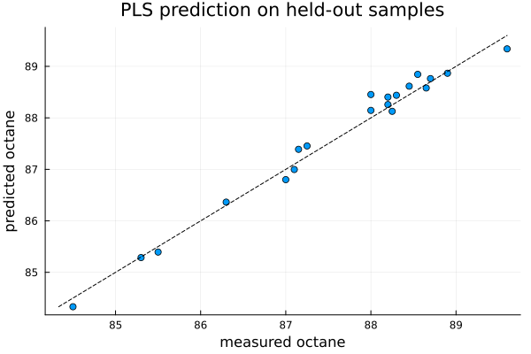
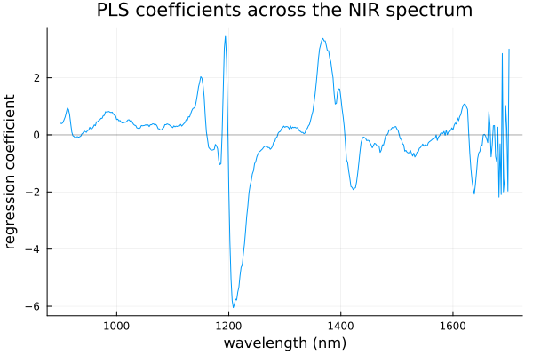
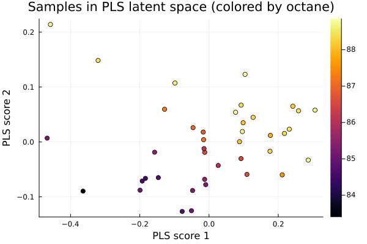

PLS: Partial Least Squares Regression
Partial Least Squares or PLS is a regression technique which is used for predicting a response $Y$ using a set of predictors $X$ using a small number of latent components. The latent components are linear combinition of predictors which can be regressed on instead of the original set of regressors $X$. This is particularly helpful if we have a large number of correlated predictors. In this scenario, oridinary least squares fails whereas PLS chooses its components to capture the directions of $X$ that are most predictive of $Y$.
In this documentation, we will depomstrate implementation of Plskern using BigRiverEssence.plskern on a gasoline dataset.
The method
Let $Y$ be response variable and $X$ be a matrix of regressors. PLS finds a direction $w$ (one as a time) in the predictor space such that it maximizes the covariance between the projected predictors $Xw$ and the response $Y$. It considers the following optimization problem: $\max_{w} \; \operatorname{cov}(Xw, Y) \quad \text{subject to } \|w\|_2 = 1.$
The scores $t = Xw$ are the values of the samples along that component. The predictor and response loadings ($p$ and $q$) are used for describing how $X$ and $Y$ are related to the scores. We then deflate or remove the component from the cross covariance. This enables the next component to captures new predictive structure rather than repeating what has been found. After we obtain $k$ components, prediction reduces to a linear model $\hat Y = \text{intercept} + X B$, where the coefficient matrix $B$ is assembled from the accumulated weights and loadings.
plskern of BigRiverEssence implements the improved kernel algorithms used by Dayal & MacGregor (1997) where they use cross-product matrices for efficient computation. The number of components, nlv, is the main tuning parameter of plskern where a small value leads underfitting and vice versa.
The data
The gasoline dataset (near-infrared spectra and octane numbers for 60 gasoline samples) is from Kalivas (1997) [1], obtained via the R pls package. The NIR spectra were measured as log(1/R) from 900 to 1700 nm in 2 nm steps, giving 401 wavelengths.
using BigRiverEssence, DelimitedFiles, Plots, Statistics, Randomdatadir = joinpath(pkgdir(BigRiverEssence), "reference_Data", "gasolinedata")
NIR = readdlm(joinpath(datadir, "NIR.csv"), ',', Float64) # 60 × 401 spectra
octane = vec(readdlm(joinpath(datadir, "octane.csv"), ',', Float64)) # 60 responses
wl = collect(900:2:1700) # the known wavelength grid (nm)
size(NIR), length(octane)((60, 401), 60)Train/test split
Now, since PLS is a predictive model, we consider a hold out test set. We use a random seed for reproduction.
Random.seed!(42)
idx = shuffle(1:size(NIR, 1))
train, test = idx[1:40], idx[41:end]
Xtr = Matrix{Float64}(NIR[train, :]); ytr = reshape(Float64.(octane[train]), :, 1)
Xte = Matrix{Float64}(NIR[test, :]); yte = reshape(Float64.(octane[test]), :, 1)20×1 Matrix{Float64}:
88.7
85.5
88.2
87.0
88.25
84.5
88.0
86.3
87.15
89.6
88.65
88.0
88.9
88.3
88.45
88.2
88.55
87.1
85.3
87.25It is important to keep in mind that plskern takes the response as a matrix which gives it flexibility to handles more than one responses uniformly. Hence we reshaped ytr and yte to $n\times 1$ matrices.
Fitting the model plskern
We now fit a PLS model with $5$ latent components.
m = plskern(Xtr, ytr; nlv = 5)Plskern{Float64}([-0.009071331671309574 0.008690754167229304 … 0.03409549187724798 -0.010709196290613874; -0.006685137396887825 0.011603759333384199 … 0.030003840762577474 -0.01878102593131566; … ; -0.002936565395231148 -0.030075803092767858 … 0.23084410215113202 -0.03160549929109052; 0.055064508447488156 0.05665115671763808 … 0.2504581848684781 0.21891956113332597], [-0.013637315454910067 -0.0027325317429242263 … 0.03655900720447571 0.031175278114692083; -0.012781567686542015 0.0002777782417697056 … 0.03432417853464808 0.02285114496256552; … ; 0.01286478240012598 0.03613843885638195 … 0.23811454801984094 0.10690642016581679; 0.02530089324015439 0.12727586683172132 … 0.2000985052392422 0.2675503083388458], [4.624948435560142 16.606632967761616 … 1.762989011596732 10.123580338763599], [-0.009071331671309574 0.0039248210261166525 … 0.05024582238940846 0.0008492204408042676; -0.006685137396887825 0.00809149464864253 … 0.04646304675572649 -0.008092788950100361; … ; -0.002936565395231148 -0.03161862776783084 … 0.13628720365424765 -0.0002543496813381327; 0.055064508447488156 0.08558117220135981 … 0.16228443364668413 0.2562510451037392], [-0.047575498111990404 -0.08847747793289566 … 0.0978861068956972 0.002475233909036007; 0.0985602530763405 0.035000644759665016 … -0.0015696276186314931 0.012745587606733461; … ; -0.012701193717215894 -0.06813682465579103 … 0.10966348358948813 -0.0028189715986264826; -0.12834210938358395 0.05954032171371737 … 0.06368764589663811 0.01973960800475289], [-0.05325535, -0.04787184999999999, -0.044023549999999995, -0.03971274999999999, -0.035204624999999996, -0.0328642, -0.03130755, -0.034106124999999994, -0.03719469999999999, -0.040174274999999995 … 1.2024071, 1.21423895, 1.235526725, 1.251331375, 1.257685725, 1.2618958, 1.2305214249999998, 1.2238273750000002, 1.2186561, 1.1986370999999998], [1.0, 1.0, 1.0, 1.0, 1.0, 1.0, 1.0, 1.0, 1.0, 1.0 … 1.0, 1.0, 1.0, 1.0, 1.0, 1.0, 1.0, 1.0, 1.0, 1.0], [86.96875], [1.0])The function returns the full PLS factorization: the weights W and R, the predictor and response loadings P and Q, the scores T, and the centering means and scales.
@show size(m.W)
@show size(m.P)
@show size(m.Q)
@show size(m.T)(40, 5)Predicting with plskern_predict
We now predict octane for the held-out samples in the test set and compare with the measured values.
ŷ = plskern_predict(m, Xte)
rmse = sqrt(mean((vec(ŷ) .- vec(yte)).^2)) # test-set prediction error
@show rmse
scatter(vec(yte), vec(ŷ); legend = false,
xlabel = "measured octane", ylabel = "predicted octane",
title = "PLS prediction on held-out samples")
lims = extrema(vcat(vec(yte), vec(ŷ)))
plot!(collect(lims), collect(lims); color = :black, linestyle = :dash)
We see from the above plot that the predicted octane values fall veryclose to the dashed $45°$ line of perfect prediction. We also get a test-set RMSE of about 0.1822 octane units. This shows a good calibration from spectra alone, on samples the model never saw during fitting.
The regression coefficients with plskern_coef
The function plskern_coef is used for assembling the coefficient vector $B$ and intercept that map a raw spectrum directly to a predicted octane. We can plot $B$ against wavelength to see which spectral regions drive the prediction.
B, intercept = plskern_coef(m)
plot(wl, vec(B); legend = false,
xlabel = "wavelength (nm)", ylabel = "regression coefficient",
title = "PLS coefficients across the NIR spectrum")
hline!([0], color = :black, alpha = 0.3)
we see from the plot that most wavelengths carry small coefficients, with few high peaks where the spectral regions are most informative about octane. This is the interpretable payoff of a linear calibration where the coefficients point back to the chemistry.
Projecting with plskern_transform
The other function plskern_transform is used for projecting samples onto the PLS latent space or their scores. If we color the scores by octane, it will shows that the components are organized around the response. This is the supervised counterpart to the variance-only components of PCA.
Ttr = plskern_transform(m, Xtr)
scatter(Ttr[:, 1], Ttr[:, 2]; zcolor = vec(ytr), colorbar = true, legend = false,
xlabel = "PLS score 1", ylabel = "PLS score 2",
title = "Samples in PLS latent space (colored by octane)")
After coloring the score scatter by octane, in the above plot, we get to know what makes PLS supervised. We see the samples lining up along the first component by their octane value where dark (low-octane) points to the left and bright (high-octane) to the right. The first PLS component is giving the direction of the spectra most predictive of octane, not merely the direction of greatest spectral variance as in PCA. That is why regressing on a few PLS scores captures the response so efficiently.
Summary
We saw that from 60 spectra with 401 correlated predictors, plskern were able to built a handful of latent components that predict octane accurately on held-out samples. This is the setting where PLS outperforms ordinary regression.
plskern is most suitable in regression problems where there are huge number of correlated variables where ordinary least squares. In this example, we used the gasoline dataset which has $401$ variables but only $60$ samples. plskern can be used in any similar type of datasets.
References
[1] Kalivas, J. H. (1997). Two data sets of near infrared spectra. Chemometrics and Intelligent Laboratory Systems, 37, 255–259.